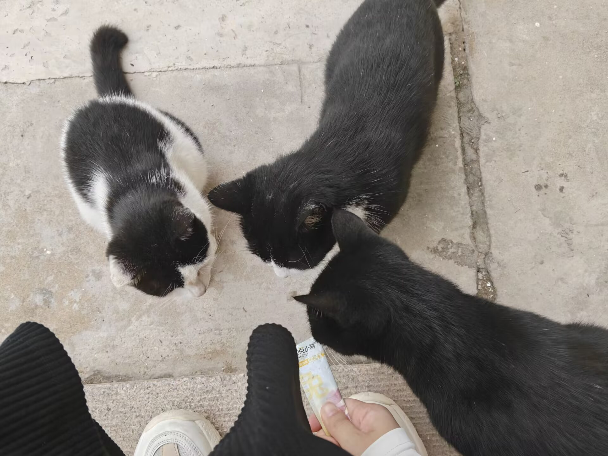
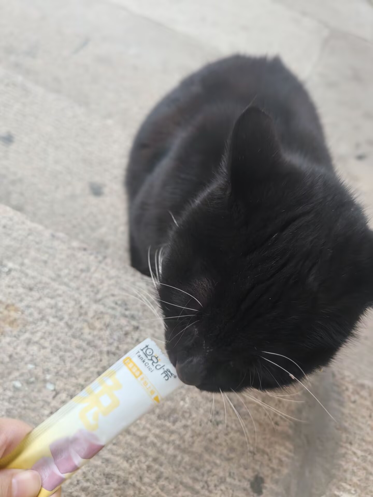
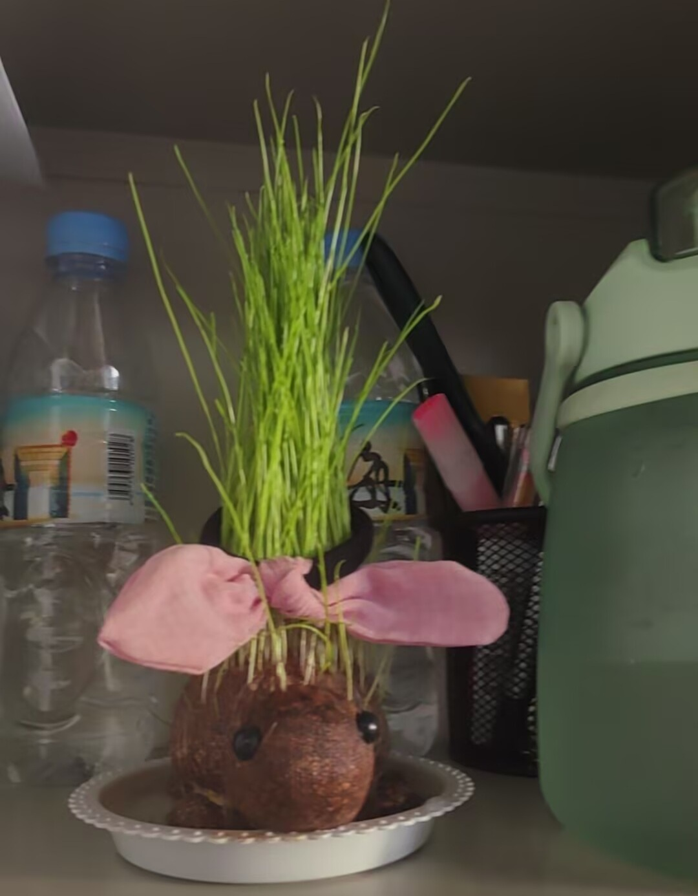
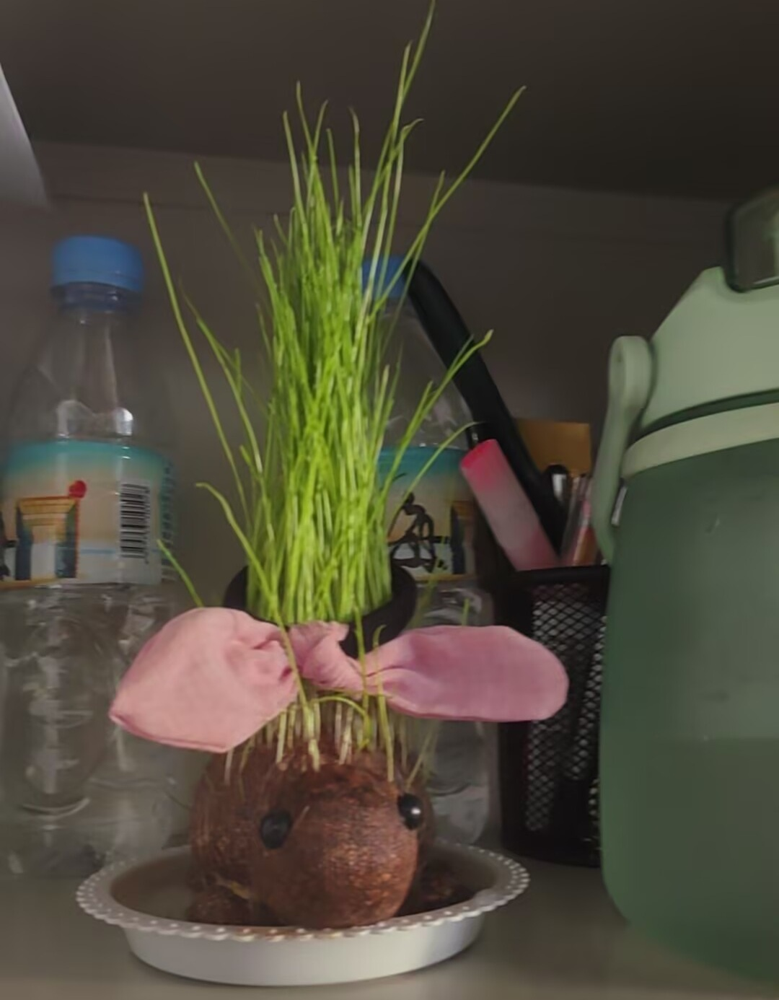
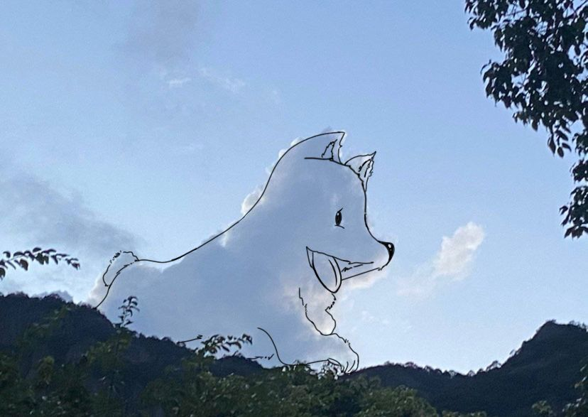
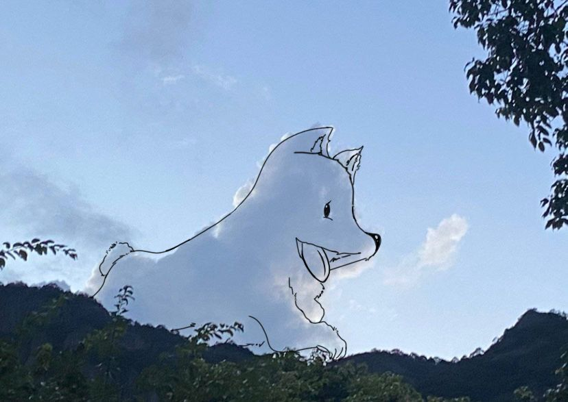

1.我在学校里喂的猫猫。平时大家都会喂它们，还会有专门的社团定期做体检和绝育，一个个油光水滑的。
印象深刻的是一只叫cos的大胖白猫，它总是浑身是伤，左前爪早就是残疾状态，据说是在与一只狗争斗的过程中负的伤。好多不明真相的新生入学，会在学校论坛为它求助，老学长们每年都要澄清：它身体健康，只是好斗。
小动物图鉴
1.我在学校里喂的猫猫。平时大家都会喂它们，还会有专门的社团定期做体检和绝育，一个个油光水滑的。
印象深刻的是一只叫cos的大胖白猫，它总是浑身是伤，左前爪早就是残疾状态，据说是在与一只狗争斗的过程中负的伤。好多不明真相的新生入学，会在学校论坛为它求助，老学长们每年都要澄清：它身体健康，只是好斗。
2.学校天鹅湖里的黑天鹅们，是华为送给我们代表友好的象征。每年出生的灰绒绒小天鹅宝宝会跟在妈妈身边，或者躺倒妈妈背上晒太阳，太可爱了！
它们个性很张扬，叫声十分粗犷，对人类视若无睹，最喜欢在岸上收集塑料袋，然后当口香糖嚼。会在水里打架，扑腾，单脚站立梳理羽毛。有时候看见它们去够岸边的草，才会发现脖子是真长！
3.学校草丛里随处可见的小刺猬，十分胆小，你要是发现了它，用炽热的目光紧盯着它，它就会一动不动地装死。
但只要你一会儿没注意，它就刺溜一阵小跑跑的好远。平常晚上散步，如果听见黑暗的草丛里有窸窸簌簌的声音，不用害怕，它们比你更怕~
4.学校里也有很多小黄狗，都十分亲人且馋嘴，冬天会可怜巴巴地围在烧烤摊附近。看见摊主驱赶它们，清澈的大学生总是感到同情，然后买两串肉喂。殊不知这一切都是摊主和大黄狗的阴谋！
一定注意！一是它们的可怜大多数是装的，二是学生的投喂让它们的嘴越来越刁，普通食物已然无法入法眼，现在它们经常偷偷叼走别人的外卖，非常精明。
 

5.左图是我男朋友家养的玄猫豆豆，可爱活泼，黑色的身子总是能完美融入黑暗。就是太调皮，总把人的胳膊和手当成玩具，又啃又抓，最喜欢吃鸡肉和虾仁。
右图虽然不是动物，但也是我的心头好，绿毛龟。它非常好养，给点水就灿烂，高高的草可以扎起来给龟龟做美丽的造型。
 

6.走在路上，偶遇一朵十分像萨摩耶的云，越看越像，回家就迫不及待地把它描出来了。画出来更像了有没有！
这个世界不能没有可爱小生物！随时发现它们的可爱之处超有意思，会让心绪一扫而光，也是我生活的乐趣之一。
7.学校走廊上偶遇的虎皮鹦鹉，它的主人连续好几天都把它寄养在这个地方。小鹦鹉还没学会说话，但是叫声很清脆好听，有人靠近会好奇地凑上来。
鹦鹉这种动物真的非常聪明，会模仿各种声音，学得会各种技能，比如扔垃圾，翻跟头，跳舞。他们对音乐非常敏感，还有着丰富的情感，如果长时间困住她，会抑郁生病哦。
8.这些是我很喜欢的网上的可爱图片。
小鸭子质问：你羽绒服里装的什么？我：反正不是鸭绒（心虚转头）
下雪了，沾满雪花的小狗像旺旺雪饼！
小狗打扮的非常时尚少女。